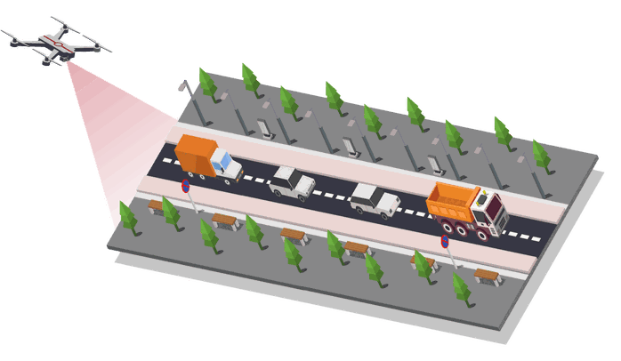
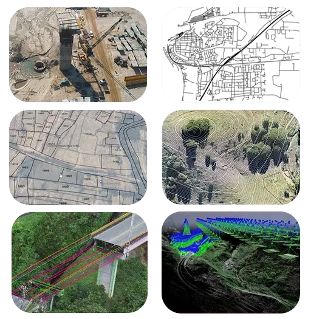
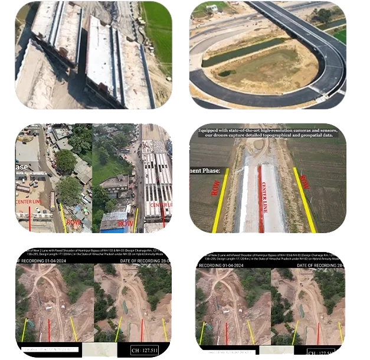
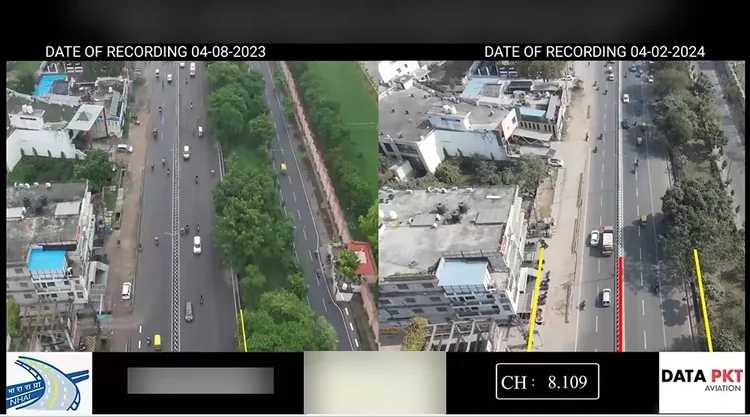
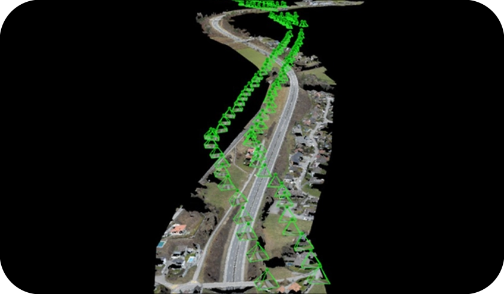
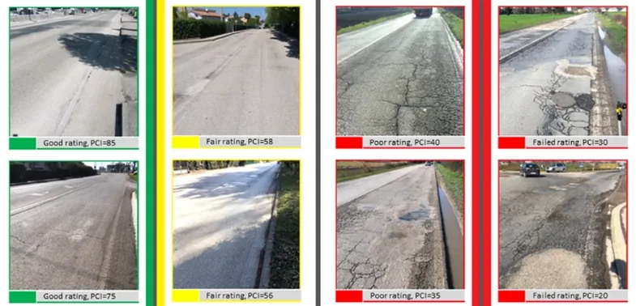
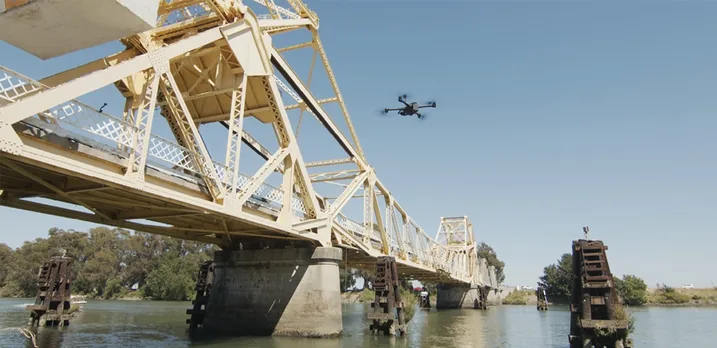
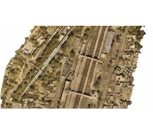
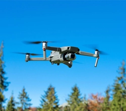
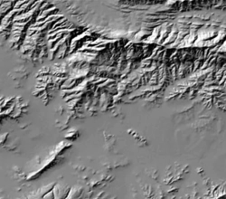

Drone Survey for Highways and Roads
In short: NHAI has made monthly drone video recording mandatory for national highway projects through construction, operation and maintenance, with comparative videos of the current and previous month uploaded to its Data Lake portal (report). DATA PKT is empanelled with NHAI in three zones for this monthly drone survey work and prepares the video project reports.

Pre-Construction
Before construction the job is to get the ground right: a survey accurate enough to design on, a clear view of each candidate alignment, and quantities you can price.

Detailed Project Report (DPR)
Surveying and Mapping
We fly the corridor with photogrammetry or LiDAR, tied to DGPS ground control points, and deliver an orthomosaic, terrain model, contours and existing features in CAD as the base for the DPR. Areas under dense tree cover, structures and cross-drainage details are completed with DGPS or total station.
Site Inspection
Repeat flights give a dated, geo-referenced record of the site: what has been built, where the hazards are and whether work follows the drawings, shared with the authority and the contractor.
Earthwork Monitoring
From each survey we compute stockpile volumes and cut and fill quantities, so earthwork can be measured, billed and checked against the schedule.
Best Route Analysis
For a new alignment we map each proposed route, produce an orthomosaic, elevation model and contours, and check conflicts with existing and proposed structures. Revenue maps are digitised so land cost can be estimated alongside construction quantities, giving a like-for-like comparison of the routes.
Under Construction
Progress Monitoring
Each flight is processed into a geometrically corrected orthophoto. Comparing orthophotos from different dates shows what has changed, the percentage of work completed and the likely completion date.
Video Project Report ( VPR )
We fly the stretch once a month and produce a video project report with completion figures for each activity and site observations. Month-on-month comparison also flags new encroachments and buildings along the corridor.
Utility Shifting
We map the stretches where utility lines are being shifted, track progress against the programme, flag clashes and safety risks, and report status so construction teams and utility owners can coordinate.
Electronic Record Generation
Dated drone records are reliable evidence of work done, useful for billing, claims and reviews by the authority or insurers.
Higher Transparency and Visibility
NHAI uses drone surveys to monitor highway projects consistently across contractors and regions. DATA PKT is empanelled with NHAI in three zones for monthly drone survey work.

Operations And Maintenance
Once a road is open it needs regular inspection to stay safe. We support maintenance teams with:

We convert aerial data into 3D point clouds to map stretches that need repair, and use monthly comparisons to spot potholes and encroachments early, before they become a safety problem.
We fly the right-of-way at regular intervals and mark encroachments such as illegal structures, vegetation overgrowth or unauthorised activity on annotated images, ready for the authority to act on.
Highways are long and narrow, so we plan flights along the corridor rather than over blocks of land. One flight plan covers the road, its right-of-way and the land on either side, and the same plan is re-flown for every repeat survey.
- Flight plans follow the alignment, so coverage is continuous with no gaps between blocks.
- Ground control points are spaced along the corridor to hold accuracy over long stretches.
- The same plan is re-flown each month, so surveys line up for comparison.
- Outputs come in the GIS and CAD formats your design and asset teams already use.

Knowing the quantities before work starts lets maintenance teams budget accurately and avoid surprise costs.
Early detection means smaller repairs: defects are fixed before they spread, and the material for each repair is measured rather than guessed.
Measured cut and fill volumes mean less material wasted on each repair.
Maintenance reports combine the latest survey with earlier flights, so you can see how each defect has developed, what it will take to fix and which stretches to prioritise.
The result is a maintenance plan based on measured data, with safer roads and fewer emergency repairs.


Drones can inspect bridge decks, piers, bearings and abutments from angles that are hard or unsafe to reach from the ground, with little or no road closure.
High-resolution photos and video of each component give engineers a record of condition to inspect, compare between visits and use to prioritise repairs. Our guide to bridge inspection by drone explains what it can and cannot replace.
After construction we survey the corridor to count and map existing trees and identify suitable sites for plantation along the highway.
The report lists tree counts and proposed plantation sites, supporting compensatory plantation and environmental compliance.

Deliverables

Detailed Project Reporting (DPR)
Survey, site inspection, earthwork measurement and route comparison in one package: the base data a highway DPR needs. See our guide to drone surveys for highway DPRs.

DTM
A bare-earth terrain model, with buildings and vegetation removed, generated from drone imagery or LiDAR and tied to ground control. It is the base for road levels, earthwork and drainage design.

Contour Mapping
Contours at the interval your design needs, generated from the terrain model, for alignment, gradient and drainage design.

Orthomosaic
A continuous, geo-referenced aerial map of the corridor stitched from hundreds of drone photos, accurate enough to measure from and overlay on design drawings.

DSM
A surface model that includes buildings, trees and other above-ground features, used to find obstructions along the corridor and plan clearances.

Aerial Photogrammetry and Videography
Aerial photos and video of the corridor for planning, progress reports and stakeholder presentations.

Topographical Survey
A full topographic survey of the corridor: ground levels, features and existing road details in CAD, ready for design.

DEM Creation
An elevation model of the corridor for alignment and gradient analysis, delivered in GIS-ready formats.

Lidar Survey
LiDAR reaches the ground through gaps in vegetation, so it is the better choice for corridors with tree cover or hilly terrain. See LiDAR vs photogrammetry.

Land Use Land Cover
A land use and land cover map of the corridor (farmland, built-up land, forest, water bodies) for land acquisition planning and environmental assessment.
Our Features
3 lakh+ km of highway data
More than 3 lakh km of highway data captured in six years for highway authorities and private contractors.
35 km a day per team
Each team covers about 35 km of highway a day for imagery and about 50 km a day for videography, with 20+ drone pilots.

Fast Data Delivery
Our GIS team processes survey data in-house, so deliverables arrive on schedule.
Accuracy
Every survey is tied to DGPS ground control points.
Clientele
Clients include National Highways Authority of India (NHAI), AIDPL, Apco Infratech, Border Roads Organisation (BRO), Ceigall India, Gawar Construction, Hillways Construction Company, MIC Mahamarg Infra Consultants, NHIDCL, PNC Infratech, RCL and Skylark.
Frequently asked questions
Can a drone survey replace a conventional topographic survey for a highway DPR?
For most corridors, a drone survey tied to DGPS ground control points gives the base topography for a DPR faster than a fully manual survey. Areas under dense tree cover, structures and cross-drainage details are usually completed with DGPS or total station on the ground. The two methods are normally combined rather than one replacing the other.
What outputs does a highway drone survey give?
An orthomosaic of the corridor, a terrain model (DTM), contours, the existing road and features in CAD, and cross-sections where needed. During construction, the same corridor can be flown again for progress monitoring and video reports.
How is progress on an under-construction highway monitored with drones?
The same stretch is flown at regular intervals, usually monthly, and each flight is compared with the last. This gives a visual record of progress, quantities moved and issues on site that can be shared with the authority and the contractor.
What is a video project report (VPR) for a highway project?
A video project report is the monthly record of a highway stretch made from a drone flight: the video of the corridor with completion figures for each activity and site observations. Comparing it with the previous month also flags new encroachments and buildings along the corridor.
How often are NHAI highway projects surveyed by drone?
Every month. NHAI has made monthly drone video recording mandatory for national highway projects during construction, operation and maintenance, and the comparative videos of the current and previous month are uploaded to its Data Lake portal.
Does DATA PKT work with NHAI?
Yes. DATA PKT is empanelled with NHAI in three zones for monthly drone survey work.